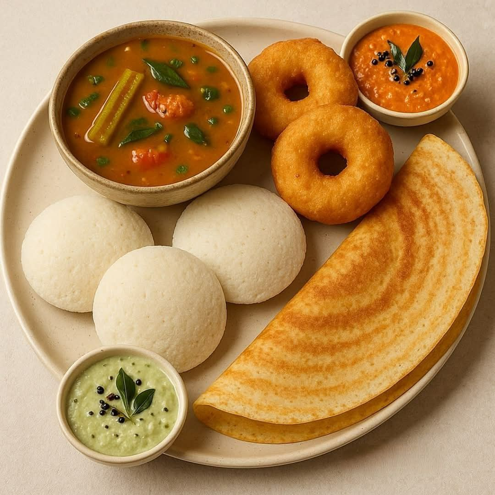

Hot Tiffins
Idli, vada, dosa, upma and pongal with sambar and fresh chutney rotation.
- Ghee karam dosa
- Set dosa with kurma
- Mini tiffin combo
Authentic South Indian Hotel
Crisp dosas from the hot plate, soft idlis with lively chutneys, proper vegetarian meals, evening snacks and sweets for families, office crowds and travellers.

Lunch served fresh from 12:00 PM
Made For Every Meal
A polished hotel experience rooted in familiar flavors: quick service, clean presentation, generous portions and a menu built around classic vegetarian staples, snacks and festive South Indian flavor.
House Specials
Every service window has its own rhythm: early tiffins stay crisp and light, lunch is plated generously, and evening snacks bring the same hotel warmth in a quicker format.
Slow simmered with vegetables, dal and roasted spice powder.
Pongal, pulihora, payasam and sweets prepared with fragrant spices and ghee.
Neatly packed tiffin and lunch combos for home, office and travel.
Customer Reviews
Best dosa and chutneys in the area. The food feels fresh every time.
Ramesh KumarSoft idlis, hot sambar and quick service. Perfect morning breakfast spot.
Lakshmi PriyaThe veg meals are filling, clean and very homely. Loved the rasam.
Suresh ReddyGood parcel packing and polite staff. Our office lunch order was on time.
Anitha DeviGhee karam dosa has excellent flavor. Crispy, spicy and served hot.
Venkatesh RaoSimple, tasty and budget friendly. The full meals are worth it.
Meenakshi IyerFilter coffee and evening snacks are very nice. Clean place for families.
Karthik NairAuthentic South Indian taste. Chutneys are fresh and never watery.
Bhavani ShankarLunch service is fast even during rush time. Staff manages it well.
Padmaja RaoMini tiffin combo is my favorite. Nice variety and good portions.
Murali KrishnaThe sambar taste is excellent. Feels like proper home cooking.
Janaki AmmaVery good vegetarian hotel. Neat ambience and quick takeaway.
Pradeep VarmaMasala dosa was crisp and the potato filling was perfectly balanced.
Divya SreeCurd rice and lemon rice parcels were fresh even after travel.
Nagarjuna GoudGood place for family breakfast. Kids loved the idli and sweet pongal.
Revathi MenonHot vada with sambar was superb. Crispy outside and soft inside.
Aravind BabuThe meals have good variety. Papad, rasam and curd complete it nicely.
Sarala KumariClean counters, fast billing and fresh breakfast. Very reliable hotel.
Mahesh NaiduEvening bajji and coffee combination is excellent after work.
Gayathri RaghavanConsistent taste every visit. The staff is friendly and attentive.
Chandra SekharVisit The Hotel
Open daily for breakfast, lunch and evening bites. Call ahead for parcels, family orders and quick takeaway.